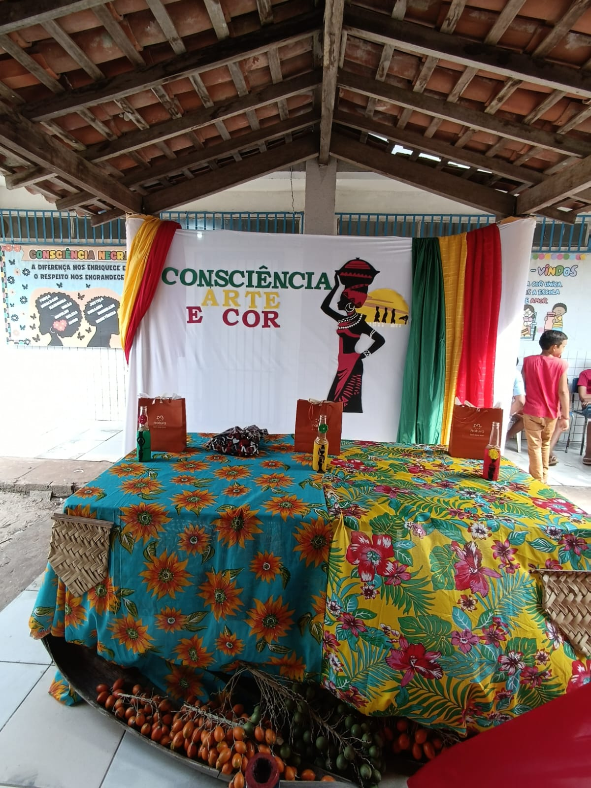
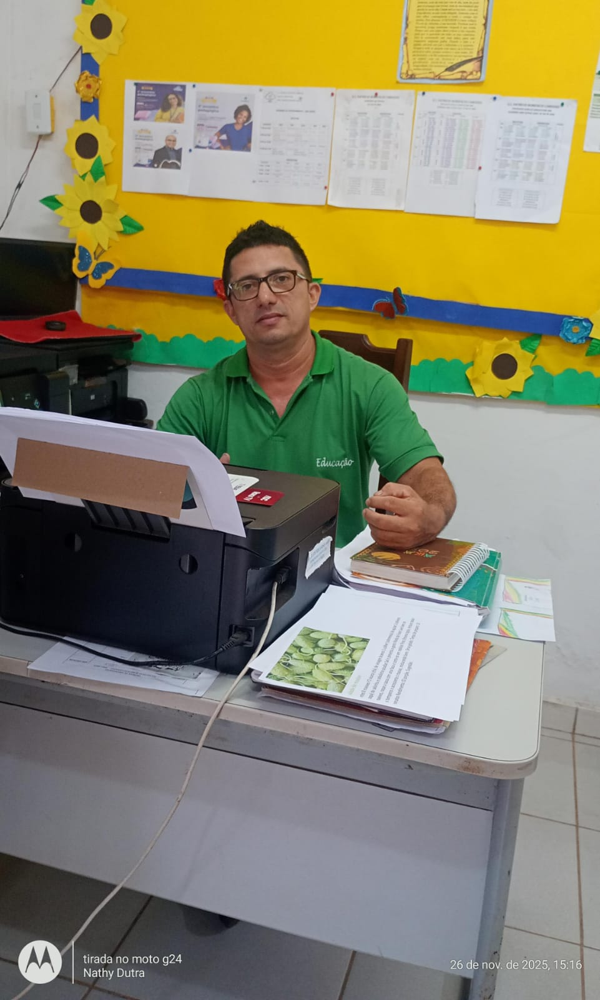

Universidade Estadual do Maranhão - UEMA
Diagnóstico da Educação Escolar Quilombola
Análise Curricular e Pedagógica na U.I. Patrício Bonifácio Cardoso
Quilombo Queluz – Anajatuba/MA
Acadêmicas: Luciana Mendes da Conceição e Natiane Cardoso Dutra
Orientador: Prof. Ms. Edson Dias
Licenciatura em Educação do Campo / Ciências Humanas (PROETNOS/UEMA)
Gestão e Docência
"O planejamento é sempre focado em resgatar a cultura local. A dificuldade está em não ter um livro exclusivo."
"Busco integrar o currículo à realidade do Quilombo. [...] Seria importante ter livros voltados para a história."
Destaque: Projeto "Arte e Cor".

